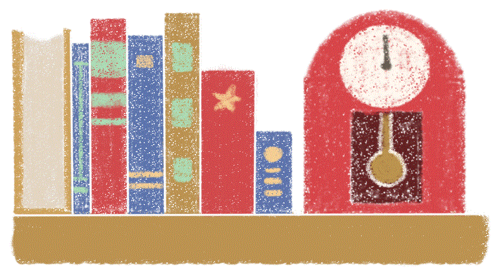
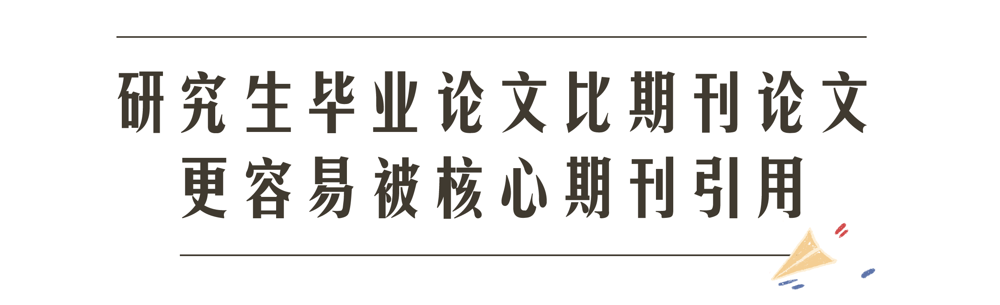
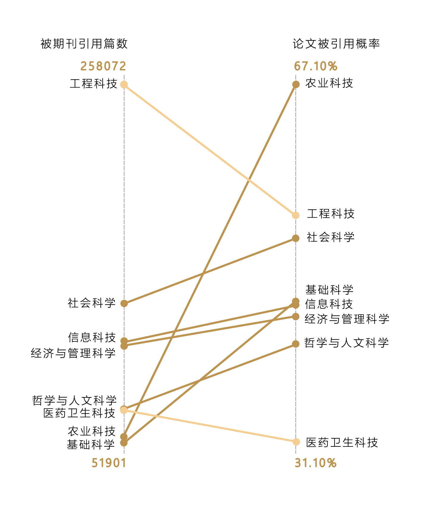
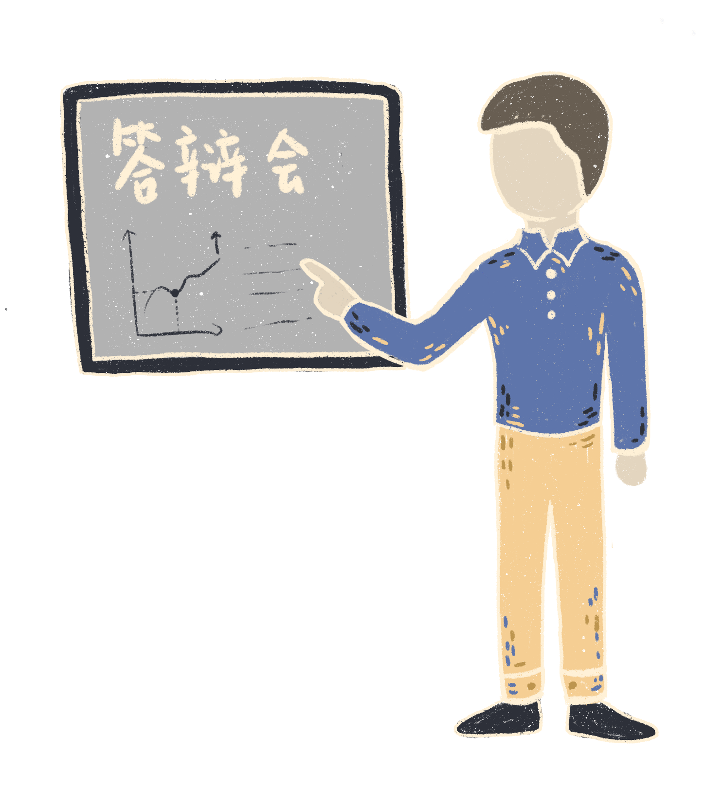
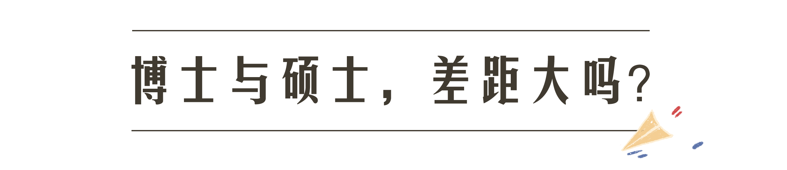
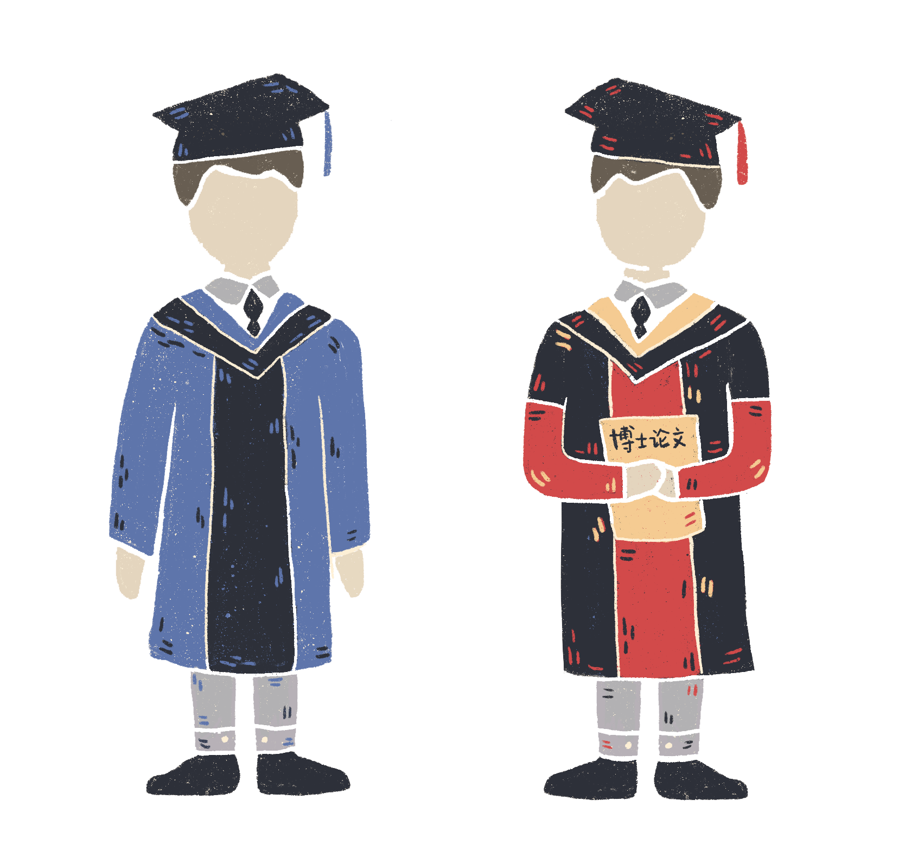
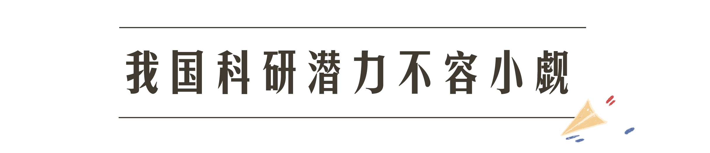
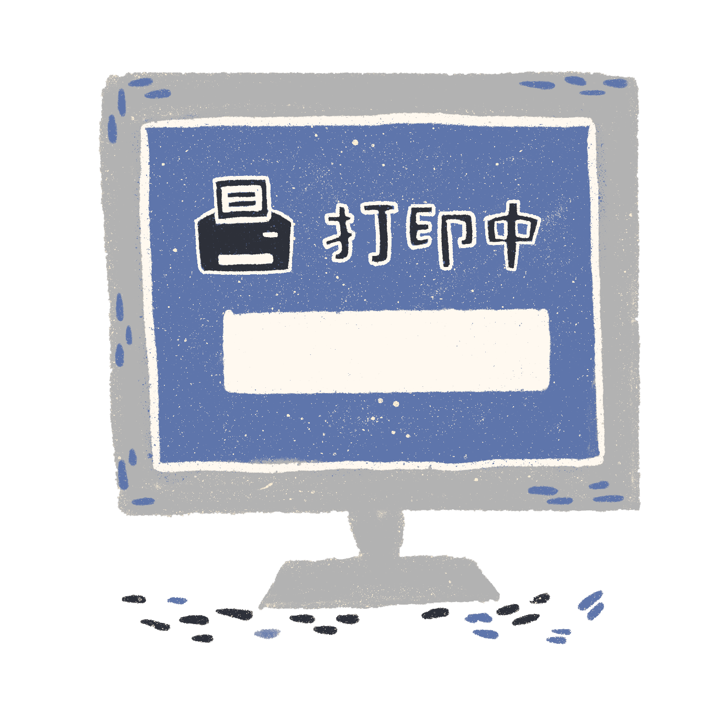

又到一年毕业季，人们大多只看到了对着天空高高扔起的学位帽，而毕业论文的去向却少有人关心。研究生完成毕业论文答辩，并不意味着毕业论文生命的结束，这些论文将进入茫茫的学术海洋，发挥自己或大或小的作用。
4月1日上午8点，李茂宇在两个月来的“老地方”坐下，电脑屏幕上仍是那篇熟悉到不能再熟悉的毕业论文。昨天晚上，导师又给他发了一整面的修改意见。
李茂宇回到宿舍时已经是晚上11点，他对论文格式进行了最后一次调整，明天，他就要把这版定稿发送给导师了。
作为中国农业大学农业生态学专业硕士二年级学生，李茂宇今年即将毕业。从1月底开始，他就进入了毕业论文写作状态，这样朝八晚十一的生活也已经持续了两个多月。
“这篇研究生毕业论文能产生多大的学术影响力呢？”这不仅是李茂宇，也是其他毕业生内心的一个疑惑。
说明：据清华大学教育研究院副教授、博士生导师王传毅，一篇论文的引用情况，是它对学术研究的贡献、影响力的重要衡量标准。我们从知网上抓取了近十年论文的引用和被引用情况进行分析。
1984年至2018年，知网上共收录了超过一亿篇（109,007,112篇）论文。
其中，只有27.3%的论文得到引用。
在所有论文中，研究生毕业论文约400万篇（4,065,271篇），仅占3.7%。
但毕业论文被引用的比例高达64.1%，远高于整体被引率（27.3%）。也就是说，每10篇研究生毕业论文中就有超过6篇可能被引用。
然而，仅看被引用的比例不足以全面反映毕业论文的影响力，它被引用在什么地方？是核心期刊还是普通期刊？同样是判断论文“水不水”的重要条件。
 毕业论文被引用到哪里了？与期刊、会议论文相似，它的主要贡献也在学位论文方面。
但是依然有55.4%的毕业论文会被期刊引用，尤其是核心期刊。
由于核心期刊可以代表所在的专业领域的最高水平和发展趋势，所以被核心期刊引用的情况成为较为普遍的评估学术贡献的一种方法。
说明：论文分类标准根据知网分类确定。
从核心期刊引用的文献情况来看，2009年至2018年，研究生毕业论文与期刊论文存在巨大差距。尽管研究生毕业论文被引用情况逐年好转，但十年间其贡献率*始终未超过4%，不足期刊论文贡献率的十分之一。 （因数据收集截止时，知网仍在每日更新，尚未完整收录2017年、2018年的毕业论文，故最近两年的数据，可能受此影响。）
但是，由于十年间知网收录的硕博毕业论文总量不足期刊的十分之一，这对贡献占比会产生很大影响。当我们比较毕业论文和期刊论文的被引用概率*时，会呈现不一样的结果。尽管毕业论文和期刊论文的被引用概率都在上升，但从2011年开始，毕业论文的被引用概率开始反超期刊，稳定在15%以上。也就是说，与期刊论文相比，一篇研究生毕业论文更容易被引用。
发表、被学界发现、被引用参考、再到学术价值渐渐减弱这一过程，每篇论文都将经历。论文被引用持续的时间越长，它的“生命周期”也将被拉长，对学术的贡献也相应更持久。
和期刊论文相比，研究生毕业论文的“生命周期”有什么特点？它是否能经得起“时间考验”呢？
毕业论文的生命周期并不持久

出版年份
被
引
年
份
一篇毕业论文的学术贡献“巅峰期”是在发表后的2至4年中。也就是说，在这个时间段内毕业论文被期刊论文引用量最多。
上海师范大学图书馆馆员贾宁通过研究知网上物理学科类的期刊论文、学位论文和专著被引情况得出，期刊文章在发表后的第1年就会得到关注，学位论文则多从第2年开始。期刊文章被持续关注的时间通常为1-4年，而学位论文受关注一般仅有1年时间。
综合比较，毕业论文的生命周期并不持久，持续贡献能力不足。
“论文的学术影响力周期跟选题有很大关系。”中国传媒大学新闻学院教授、博士生导师刘昶说。一些人文社科类的毕业论文会追热点，但论文的参考价值随热点消退自然会下降。比如传媒领域两三年前的引用热门——直播，如今已渐渐“冷却”。
创新性也是影响论文生命周期的一大因素。扬州大学园艺与植物保护学院教授、博士生导师陈学好解释道，“如果创新点特别好，研究解决的问题对整个行业、学术圈影响比较大，大家再做相关的研究的时候就会引用你的论文。” 一篇严谨踏实和有创新性的论文，才能真正经得起时间的检验。
毕业论文的学术贡献情况不能一概而论，因为学科间存在着不小的差别。
对农学专业的李茂宇来说，毕业论文是研究生最后一年，在实验室里反复“做”出来的，实验的结果需要比现有的研究有更进一步的进展才可以。而对于新闻传播学硕士黄若鸿来说，自己的毕业论文主要是花了半年的时间把以往的新闻报道进行整理归纳，针对传播的现象和效果进行研究。而医学博士小王的硕士论文只花了三个星期的时间，他说，医学专业更重视的还是平时发表的小论文，最后的毕业论文很多是对几年来研究成果的汇总。
各学科毕业论文被引用概率呈上升趋势
点击折线查看各学科被引用前三名的论文详情
通过引用数据来看各学科学术贡献情况，十年来，八大学科的毕业论文被引用概率都呈现上升趋势。农业科技领域的论文引用概率保持领先，医药卫生科技最低。
农业科技的被引篇数少，但被引用概率最高
值得注意的是，2018年农业科技论文的被引用篇数排在倒数第二位，但被引用概率却遥遥领先，高达67%。医药卫生科技毕业论文的被引用概率最低，只有31.1%。
为何学科间存在巨大差异？陈学好教授认为，农学科技论文的高被引用概率与该领域的极高创新性有关，毕业论文从选题开始就要创新，以推动学科进步为任务，比起更注重回顾历史、整理文献的学科，或许有了更大的被引用可能。
针对医药卫生科技论文的低引用率，复旦大学预防医学的研三学生陈想想认为，国内的医学研究跟国外还有一定的差距，学生写论文时更倾向于从国际高水平期刊文献中引用。不同于易受母语影响的文科，“医学”的国际性较强，医学研究人员更多地关注以英文为主的国际文献交流平台，因此国内毕业论文被引用较少。
 2017年，我国共有硕士毕业生52万人，博士毕业生5.8万人，大约是硕士的十分之一。博士需要比硕士多经历3到5年的进修，这是否能让他们的毕业论文水平拉开一定的差距呢？
硕博之间的差距在逐年扩大
数据显示，十年来硕博生毕业论文被引用概率保持上升趋势，但博士的毕业论文被引用概率始终比硕士高，并且，硕博之间的差距也在逐年扩大。
很多硕士生会选择毕业之后直接就业，博士则往往抱着继续从事教学研究的打算，因此在对待毕业论文的心态上有所不同。上海协和医学院博士毕业生刘新农回忆道，他的硕士和博士毕业论文选题不相关，落脚点也不同，但博士论文一定会内容更多、研究技术更熟练、程度上会有所加深。
陈学好教授提到：“博士的要求更高，一是他选择解决的问题难度更大，也特别强调系统性；二是他铺的面会更宽一点，整个论文的立体感跟覆盖度要比硕士要丰满得多。”刘昶教授也分析说，导师在辅导硕士和博士的论文的时候，要求不一样，辅导方式也不一样：硕士生管得比较多，博士生则讨论多指导少。因为博士生读书多，思考问题更深，同时博士生已经具备了独立研究的能力。博士生的思辨和研究能力比起硕士生都有所提高，在毕业论文写作上也会更有深度和广度，他们的论文更加“脱水”，具有较高的影响力。
 2017年中国科学技术信息研究所发布的中国科技论文统计结果显示，我国发表科技论文数量跃居世界第二，仅次于美国。但计算篇均被引率时，中国的排名则从发文量第2名，跌至被引率第15名。在国际上，我国科技论文的学术影响力并不显著。
研究生教育作为高等教育的最高层次, 其发展水平可以表明一个国家的科技水平。其实，单从毕业论文被引情况来看，我国研究生的水平是在不断上升的。陈学好教授认为，近些年国内外的差距在缩小。留学归来的学者越来越多，带来了活跃的学术思想。同时中国的科研经费在增多，实验室等平台也不不断建设，不少领域的中心已经渐渐从国外转移到中国，我国的科研潜力不容小觑。
2019年4月2日，教育部公开该年部门预算，拟拨款800万，用于抽检约6000篇学位论文篇（不含军队系统）。从2014年起，国家就明确规定博士、硕士学位论文抽检工作为每年一次，博士、硕士学位论文的抽检比例分别为10%和5%左右。国家重点推进抽检工作，是加强研究生教育质量保证和监督体系的一大措施，体现出国家对高等教育的重视。未来，研究生将越来越难“水”完一篇毕业论文。
5月6日，李茂宇拿到了论文的评审意见表，看着表上“修改后可参加答辩”八个大字，他这才感觉身上的担子放下了一半。宿舍打印店里的机器不断轰鸣，大半年来的心血印在一张张纸上，从打印机里列队而出。李茂宇看着白花花的纸张不禁出神，这篇论文将会去向哪里，又会发挥怎样的作用呢？
现在，不如来做个小游戏吧？